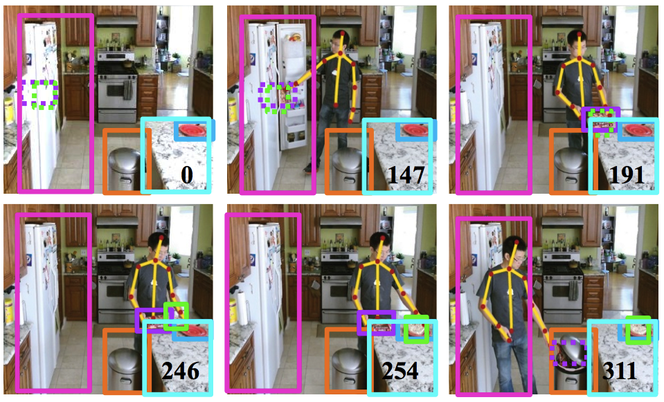
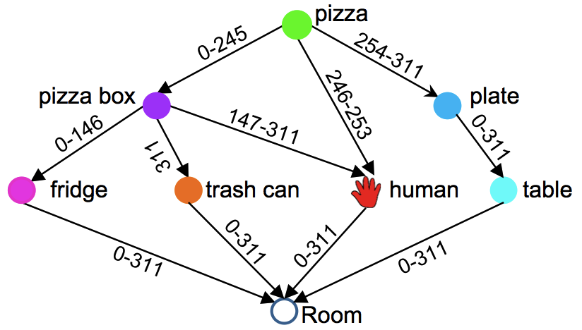

What is Where: Inferring Containment Relations from Video
Wei Liang1,2 Yibiao Zhao2 Yixin Zhu2 Song-Chun Zhu2
1Beijing Institute of Technology 2University of California, Los Angeles, USA
 
Left: Structured, qualitative and abstract interpretation of containment relations over time in a scene. The goal is to answer “what is where over time”.
Right: The inferred containment relations. The numbers on edges denote the frames when the containment relations occur.
Abstract
In this paper, we present a probabilistic approach to explicitly infer containment relations between objects in 3D scenes. Given an input RGB-D video, our algorithm quantizes the perceptual space of a 3D scene by reasoning about containment relations over time. At each frame, we represent the containment relations in space by a containment graph, where each vertex represents an object and each edge represents a containment relation. We assume that human actions are the only cause that leads to containment relation changes over time, and classify human actions into four types of events: move-in, move-out, no-change and paranormal-change. Here, paranomal-change refers to the events that are physically infeasible, and thus are ruled out through reasoning. A dynamic programming algorithm is adopted to finding both the optimal sequence of containment relations across the video, and the containment relation changes between adjacent frames. We evaluate the proposed method on our dataset with 1326 video clips taken in 9 indoor scenes, including some challenging cases, such as heavy occlusions and diverse changes of containment relations. The experimental results demonstrate good performance on the dataset.
Publication
What is Where: Inferring Containment Relations from Videos
Wei Liang, Yibiao Zhao, Yixin Zhu, and Song-Chun Zhu
2016 International Joint Conference on Artificial Intelligence ( IJCAI)
Paper
, Video
BibTex
@inproceedings {wei2016relation,
title=
{ What is Where: Inferring Containment Relations from Videos},
author = {Liang, Wei and Zhao, Yibiao and Zhu, Yixin and Zhu, Song-Chun},
booktitle = {25th International Joint Conference on Artificial Intelligence (IJCAI)},
year={2016},
pages={3418--3424}
}

- 媒体计算与智能系统实验室
- Media Computing and Intelligent Systems Lab
Beijing Institute of Technology Copyright Address: 5 South Zhongguancun
Street, Haidian District, Beijing Postcode: 100081